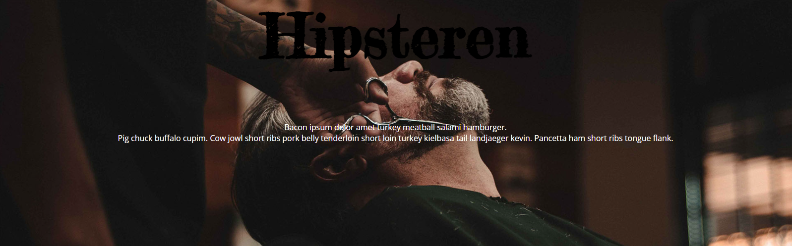

Responsive Site
Mit responsive site, som var en viderebygning af website_v2, er bygget op af html og javaScript. Hjemmesiden er kodet mobilefirst, og er derfor responsiv i forskellige størrelsesformater.
Gå til opgavenTema 2 Grundlæggende Web, bød på en introduktion til html og css. Vi lærte om diverse stilarter, der lå til grund for en fremlæggelse for vores medstuderende. Dertil skulle der laves et responsivt site, med den tildelte stilart. Dette site, skulle konstrueres ud fra et bestemt wireframe, samt layoutdiagram. De to sidstnævnte, havde til formål, at sikre et korrekt opsat produkt, samt give en klar plan, for udførslen af sitet. Præmissen for hjemmesiden var mobile first. Mobile first, betyder at sitet først kodes og tilrettelægges så det passer til et mobilformat. Dette gøres, modsat tidligere da man gik ud fra desktop first, da langt størstedelen af brugerne, også tilgår websites på mobilen. Hvis ikke dette laves korrekt, vil man på mobilen ikke kunne overskue hjemmesiden, på samme måde, som hvis det er lavet med mobile first i øjemed. For at lave hjemmesiden mobile first, blev der brugt mediaqueries, rem, grid og flex-box. Et udkast af properties hertil, var fx grid-template-columns, grid-row, justify-content og gap. Disse properties formål er, at sitet tilpasser sig forskellige skærmstørrelser og opløsninger. Man kan dermed lettere guide en bruger gennem hjemmesiden, ved at dirigere brugeren, ved hjælp af opsætningen i css. Stilarten på det udleverede udtryk som vores gruppe modtog, var hipster. Hjemmesiden skulle derfor designes med det i baghovedet. Hjemmesiden har derfor roligere farver, som bærer præg af farver samt, font elementer, der afspejler hipstermiljøet. Hjemmesidens sammensætning, skulle tydeligt afspejle denne stilart, så skrifttyper, indhold og farvevalg var derfor vigtigt. Samt de forskellige billeder, for at underbygge selvsamme stemning. Hvis jeg skulle lave den om, ville jeg gerne have gjort mere ud af hvor meget indholdet fylder. Samt evt. centreret navigationsbaren, da resten af hjemmesiden af centreret. Dertil også tilpasset billedet i sektion 2, så den går ned langs hele teksten, i kassen ved siden af.
Mit responsive site, som var en viderebygning af website_v2, er bygget op af html og javaScript. Hjemmesiden er kodet mobilefirst, og er derfor responsiv i forskellige størrelsesformater.
Gå til opgavenDenne photoshop øvelse, gik ud på at manipulere billeder, for at få et specielt udtryk frem. Opgaven blev dog ikke uploaded til domæne, men kan ses på billedet ovenover.